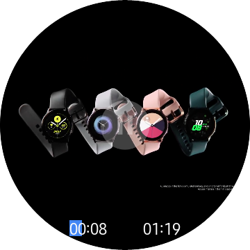
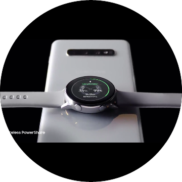

MediaView and MediaPlayer
Introduction
MediaView is used to displaythe video on the screen. MediaPlayer provides functionality of playing multimedia.
PlaybackState
MediaPlayer has a PlaybackState. Some APIs only work on the certain state and some APIs transit the state.
State diagram of PlaybackState

Video output type
Buffer
- It displays video data on the graphics buffer using GL surface. It is usually used to attach a video on a part of the view.
MediaView
Associating Player with MediaView
MediaPlayer and video output are created independently. The developer needs to associate Player and the video output to display video data.
Use Player property of MediaView
<w:CirclePage
x:Class="WearableUIGallery.TC.TCMediaViewStackLayout"
xmlns="http://xamarin.com/schemas/2014/forms"
xmlns:x="http://schemas.microsoft.com/winfx/2009/xaml"
xmlns:w="clr-namespace:Tizen.Wearable.CircularUI.Forms;assembly=Tizen.Wearable.CircularUI.Forms">
<w:CirclePage.Content>
<StackLayout>
<w:MediaView x:Name="View">
<w:MediaPlayer x:Name="VideoPlayer" Source="test.mp4" AutoPlay="true" UsesEmbeddingControls="true"/>
</w:MediaView>
</StackLayout>
</w:CirclePage.Content>
</w:CirclePage>
var view = new MediaView
{
Player = new MediaPlayer
{
UsesEmbeddingControls = true,
AutoPlay = true,
Source = MediaSource.FromFile("test.mp4")
}
};
Embedding controls
By default, MediaPlayer provides an embedding control. If you don't want to use the default embedding controls, set UsesEmbeddingControls to false.
public bool UsesEmbeddingControls
|  |  |
 |
|---|---|---|
| embedding contols (on playing) | embedding contols (on pausing) | without embedding controls |
AutoPlay/AutoStop
Video can't play before media view is shown, so you need to know when the media views are available. If you use AutoPlay/AutoStop property, you don't need to care about the view state.
AutoPlay
public bool AutoPlay
Automatically starts a player when a View is shown (Rendered).
AutoStop
public bool AutoStop
Automatically stops a player when a View is gone (Renderer was disposed).
Convert Position to Progress
In many cases, MediaPlayer.Position is int value, whereas Progressbar.Progress is double value (0 to 1.0), so conversion is required. This can be easily implemented through a custom converter as follows.
Create a custom converter
Implements Xamarin.Forms.IValueConverter
public class PositionToProgressConverter : IValueConverter
{
public object Convert(object value, Type targetType, object parameter, CultureInfo culture)
{
return ((int)value / (double)(GetParameter(parameter)));
}
public object ConvertBack(object value, Type targetType, object parameter, CultureInfo culture)
{
return (int)((double)value * GetParameter(parameter));
}
int GetParameter(object parameter)
{
var duration = ((Tizen.Wearable.CircularUI.Forms.MediaPlayer)parameter).Duration;
if (duration == 0)
duration = 1;
return duration;
}
}
Pass a MediaPlayer instance as the parameter
Use a custom converter in Xaml
....
<ContentPage.Resources>
<ResourceDictionary>
<local:PositionToProgressConverter x:Key="positionToProgress"/>
</ResourceDictionary>
</ContentPage.Resources>
...
<ProgressBar Progress="{Binding Source={x:Reference Player}, Path=Position, Converter={StaticResource positionToProgress}, ConverterParameter={x:Reference Player}}}"/>
....